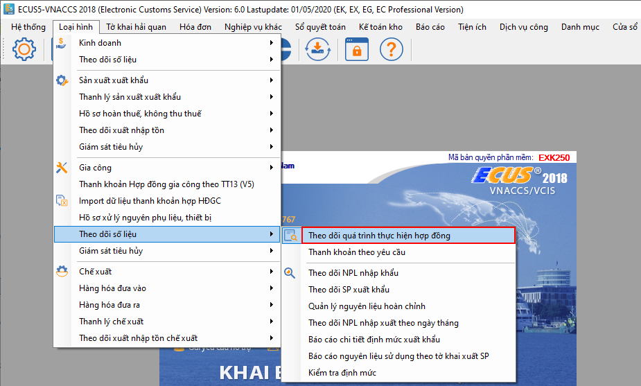
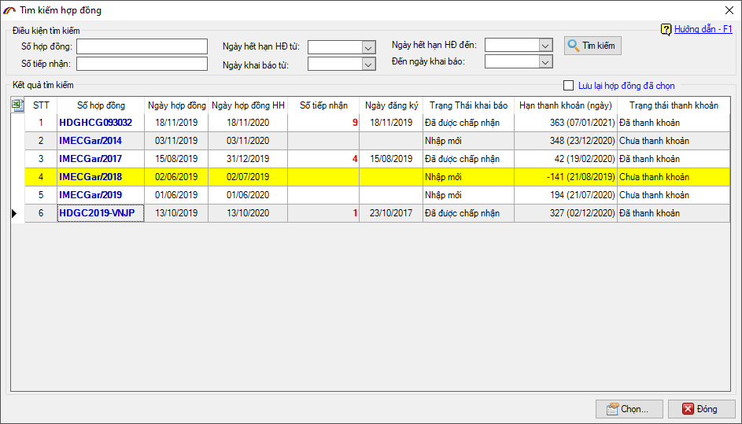
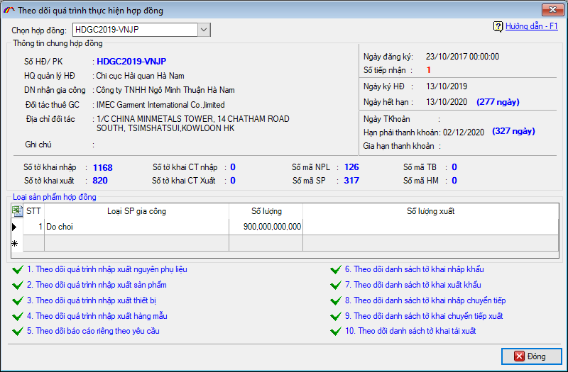
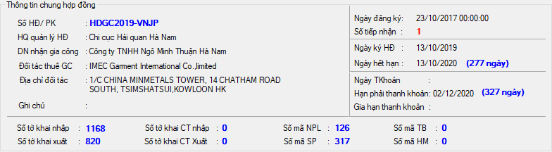
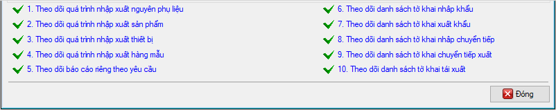
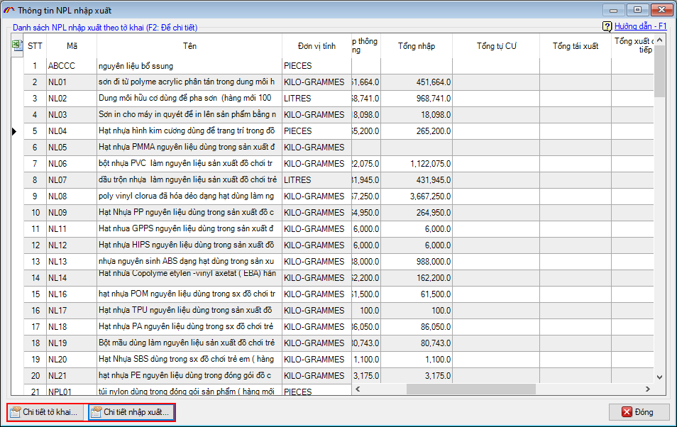
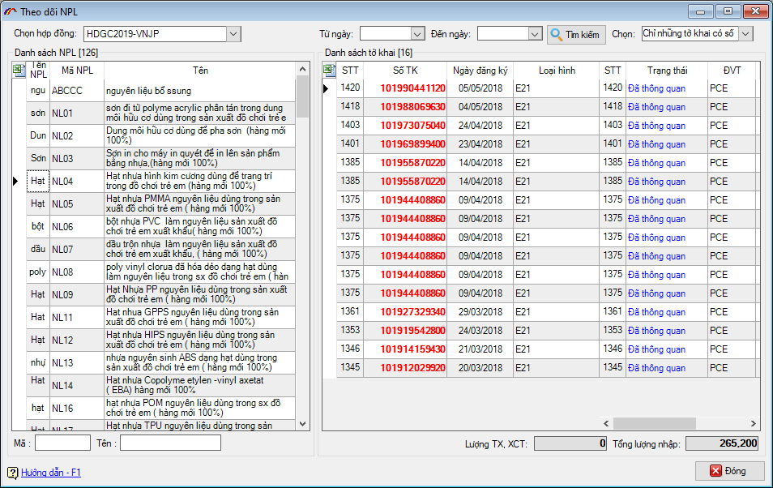
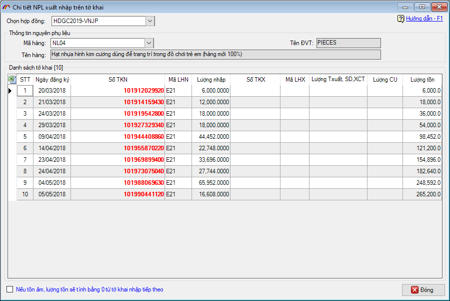
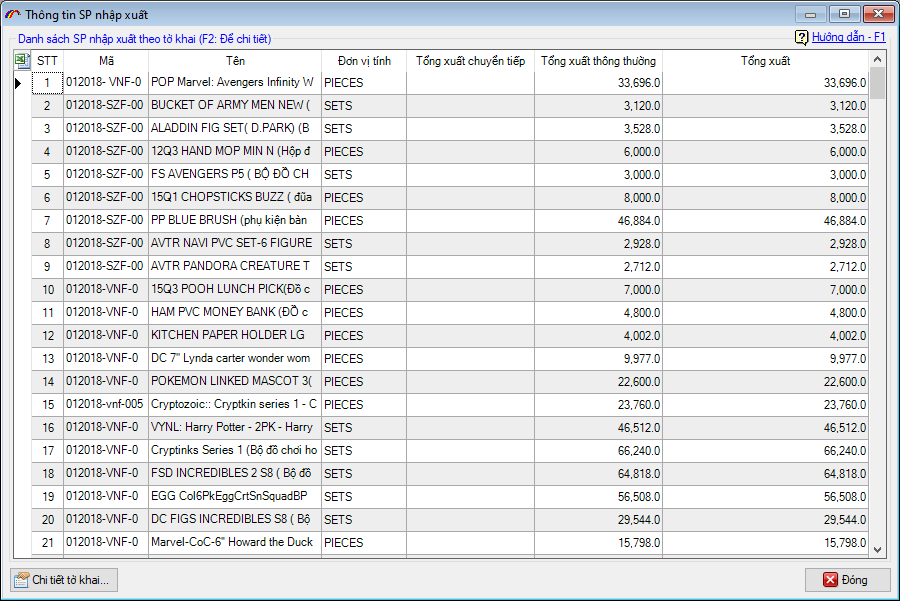
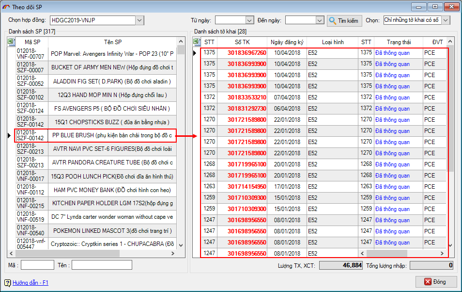

THEO DÕI QUÁ TRÌNH THỰC HIỆN HỢP ĐỒNG
Đây là chức năng tiện ích giúp doanh nghiệp theo dõi được một cách chi tiết nhất về quá trình thực hiện các hợp đồng gia công. Bao gồm việc xuất – nhập nguyên phụ liệu, sản phẩm, máy móc thiết bị và hàng mẫu…
Để theo dõi, bạn vào menu Loại hình / Theo dõi số liệu trong phần của loại hình Gia công, chọn mục Theo dõi quá trình thực hiện hợp đồng:

Phần mềm sẽ yêu cầu bạn chọn hợp đồng cần theo dõi:

Chọn xong giao diện chức năng hiện ra như sau:

Tại đây, bạn có thể chuyển đổi qua lại giữa các hợp đồng khác nhau tại mục Chọn hợp đồng.
Phần thông tin chung hợp đồng, phần mềm sẽ thống kê bao quát các thông tin về hợp đồng để bạn tiện theo dõi:

Phía dưới là danh sách 10 chức năng theo dõi mà bạn có thể thực hiện:

Cụ thể một số chức năng như sau.
1. Theo dõi quá trình nhập xuất nguyên phụ liệu.
Chức năng này sẽ thống kê danh sách nguyên phụ liệu với tổng hợp số lượng tổng nhập, cung ứng, chuyển tiếp… đồng thời có thể xem chi tiết danh sách tờ khai nhập – xuất liên quan:

Để xem chi tiết các tờ khai hoặc quá trình nhập xuất liên quan, bạn chọn nguyên phụ liệu sau đó nhấn vào nút tương ứng.


2. Theo dõi quá trình nhập xuất sản phẩm:
Chức năng này sẽ thống kê danh sách sản phẩm với tổng hợp số lượng tổng xuất, chuyển tiếp… đồng thời có thể xem chi tiết danh sách tờ khai nhập – xuất liên quan:

Bạn có thể xem chi tiết danh sách các tờ khai xuất tương ứng của từng sản phẩm bằng cách chọn sản phẩm và nhấn nút Chi tiết tờ khai…

Đối với các mục theo dõi khác, bạn nhấn vào từng mục để xem chi tiết theo nhu cầu của mình.
Bản quyền © thuộc về Công ty TNHH Phát triển công nghệ Thái Sơn